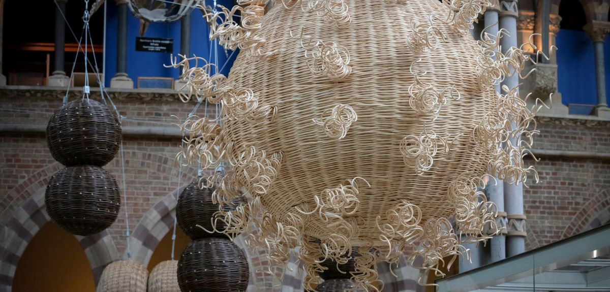

<!DOCTYPE html>
<html>
    <head>
        <title>University of Oxford</title>
        <link rel="stylesheet" type="text/css" href="tampilan oxford.css">
        <meta name="viewport" content="width=device-width, initial-scale=1">
    </head>
</html>

<body bgcolor="white">
    <header>
        <div class="uni"></div>
        <div class="homepage">NEWS 3</div>
    </header>


    <nav>
        <div class="menu-bar">
        <ul>
          <li><a href="index.html">Homepage</a></li>
          <li id="menu-products">
            <button onclick="myFunction()" class="dropbtn">About ▼</button>
            <ul id="dropdown-products">
                <div id="myDropdown" class="dropdown-content">
              <li><a href="OrganisationsOxClar.html">Organisation</a></li>
              <li><a href="牛津大学Clar.html">牛津大学</a></li>
              <li><a href="InternationalOxfordClar.html">International Oxford</a></li>
            </div>
            </ul>
          </li>
          <li><a href="ResearchClar.html">Research</a></li>
        </ul>
        </div>
      </nav>


    <script>
        function myFunction() {
            document.getElementById("myDropdown").classList.toggle("show");
        }

        window.onclick = function(event) {
  if (!event.target.matches('.dropbtn')) {
    var dropdowns = document.getElementsByClassName("dropdown-content");
    var i;
    for (i = 0; i < dropdowns.length; i++) {
      var openDropdown = dropdowns[i];
      if (openDropdown.classList.contains('show')) {
        openDropdown.classList.remove('show');
      }
    }
  }
}
    </script>
<div class="el"></div>
<div id="">
<div class="org">Oxford Vaccine Group marks 30 years battling ‘deadly six’ diseases with major art installation</div>
<div class="naur">A major art installation featuring dramatically upscaled bacteria, viruses and a parasite will be unveiled on 26 September at Oxford University’s Museum of Natural History to celebrate 30 years of vaccine development at the Oxford Vaccine Group (OVG) - tackling some of the world’s most deadly diseases.</div>
<div class="line"></div>
<div class="nose">The installation was commissioned to mark the 30th anniversary of the Oxford Vaccine Group which was established in 1994, and set out to provide scientific research into the development and implementation of vaccines, in particular diseases for which there were at the time no effective vaccines.</div>

<div class="nose">'We will use cutting-edge digital tools to share this important knowledge with the public,' explains Professor Daniel Grimley from the University of Oxford.The installation consists of six, three-dimensional sculptures woven in English willow, representing different diseases for which OVG has developed a vaccine: pneumonia, meningitis, typhoid, Covid, malaria and Ebola. Five of these will be suspended in the central room of the Museum, within the How Evolution Works gallery, with the sixth – a 2.4m long representation of Ebola weighing 75kg – lying at floor level.</div>

<div class="nose">'For 30 years, OVG has been working at the forefront of vaccine research in the fight against these diseases and many others, saving millions of lives, and helping people of all ages live longer, happier and healthier lives,' says Professor Pollard, Director of the Oxford Vaccine Group, 'and it is really exciting to see Angela bring this to life in her artwork.'</div>

<div class="nose">Acclaimed Scottish artist, Angela Palmer, whose sculptures are in museums worldwide, previously created a glass sculpture of the original Wuhan coronavirus particle sphere at 8 million times its size, which was unveiled at the Museum of Natural History and is now on display in London’s Science Museum.</div>

<div class="nose">'I had originally planned to use the same technique' explains Palmer, 'However apart from the coronavirus, none of these have been modelled in 3D.'</div>

<div class="nose">'I was battling to find an alternative concept' she continues, 'and came across a collection of strange, three-dimensional shapes woven in straw while on holiday. One particularly reminded me of the meningitis bacteria form, and it struck that I could explore creating the entire installation in willow.'</div>

<div class="nose">'Willow was immediately appealing to me' Palmer adds. 'It is a native British tree and is imbued with medical associations dating back some 3,500 years.'</div>

<div class="nose">Palmer then tracked down two of the foremost weavers in the UK, Jenny Crisp and Issy Wilkes to collaborate on the project. Supported by a further renowned willow weaver in Mel Bastier, the sculptures were then created, formed from the artist’s drawings and files of scientific illustrations, testing the potential capabilities of willow to its limits.</div>

<div class="nose">Sound will also feature within the installation: Palmer has inserted a speaker into the sculpture representing the malaria parasite, that plays the sinister but familiar high-pitched ‘whine' of one of the most lethal mosquitoes in the world. The sound of the Anopheles Funestus will be played on a loop, pausing 10 seconds every minute to symbolise the fact that today a child under the age of 5 dies of malaria every 60 seconds.</div>

<div class="nose">'The Museum of Natural History is both a centre for scientific study at Oxford and a space for the public to engage with science, so we’re delighted to be able to celebrate the success of the Oxford Vaccine Group with this unique meeting of science and artwork' says Rachel Parle, Interim Head of Exhibitions, Oxford University Museum of Natural History.</div>

<div class="nose">The installation has been partly funded by the University of Oxford’s Gardens, Libraries and Museums (GLAM) division and will be open to members of the public from 26 September 2024 to 5 January 2025.</div>

<div class="nose">Richard Ovenden OBE, Head of GLAM, said: 'We are delighted to be able to support this remarkable installation commemorating Oxford University’s contribution to the war on infection. The Deadly Six will sit alongside an assembly of one of the world’s greatest groupings of cultural and scientific collections.'</div>

<div class="nose">'At the Oxford Vaccine Group, we’ve always strived to create a bridge between research and public health advice, and public engagement with vaccines' concludes Pollard. 'So it’s fantastic to have the Museum of Natural history host this exhibit. I’m hopeful that a great many of the public will visit and be able to engage with our work, and with vaccines in a positive way.'

</div>

</div>
<div class="inv">.</div>

<footer>
  <div class="rama">CONNECT WITH US</div>
  <div class="mam">
      <a href="https://www.youtube.com/@oxforduniversity"></a></div>
  <div class="mam">
      <a href="https://www.instagram.com/oxford_uni/"></a></div>
  <p>&copy; 2024 - University of Oxford</p>
</footer>